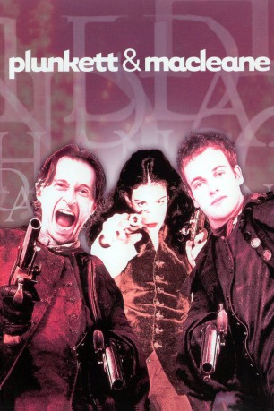
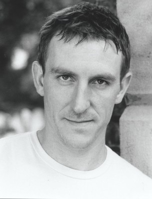

#9313 Plunkett & Macleane - Gegen Tod und Teufel
Alternativ: Plunkett & Macleane
 
 IMDB-Wertung: 6.4 / 10
IMDB-Wertung: 6.4 / 10  Metascore: 0
Metascore: 0 
Britisches Drama von Jake Scott, das im England des 18. Jahrhunderts angesiedelt ist. Es bezieht sich auf die Geschichte von Capt. James Macleane und Will Plunkett, die sich als Wegelagerer über Wasser gehalten haben. Der Plan geht auf bis sich ihnen eines Tages eine Frau in den Weg stellt.
Jahr: 1999
Dauer: 101 Minuten
FSK: 16
Land: England Studio: PolyGramTonspuren: DD5.1 - ,
Untertitel: Englisch,
Auflösung: 1080p (1920x816) Größe: 2969 MB
Genre: Action, Drama, Abenteuer, Krimi
Regisseur: Jake Scott
Drehbuch: Selwyn Roberts
Soundtrack: Craig Armstrong
Darsteller:
 Jonny Lee Miller als Macleane
Jonny Lee Miller als Macleane Robert Carlyle als Plunkett
Robert Carlyle als Plunkett Ken Stott als Chance
Ken Stott als Chance Tommy Flanagan als Eddie
Tommy Flanagan als Eddie Stephen Walters als Dennis
Stephen Walters als Dennis Terence Rigby als Harrison
Terence Rigby als Harrison Christian Camargo als Lord Pelham
Christian Camargo als Lord Pelham- Neve McIntosh als Liz
 Matt Lucas als Sir Oswald
Matt Lucas als Sir Oswald David Walliams als Viscount Bilston
David Walliams als Viscount Bilston- Alexander Armstrong als Winterburn
 Ben Miller als Dixon
Ben Miller als Dixon- Vladimír Javorský als Headbutted Tailer
 Alan Cumming als Lord Rochester
Alan Cumming als Lord Rochester Michael Gambon als Lord Gibson
Michael Gambon als Lord Gibson Liv Tyler als Lady Rebecca Gibson
Liv Tyler als Lady Rebecca Gibson Karel Dobrý als Lewd Young Man
Karel Dobrý als Lewd Young Man- Tom Ward als Backbench Heckler
 Nicholas Farrell als M.P.s Secretary
Nicholas Farrell als M.P.s Secretary- Claire Rushbrook als Lady Estelle
- Dean Cook als Older Highwayman Kid
- Tony Maudsley als Older Clergyman
-  Alex Palmer als Younger Clergyman
 Noel Fielding als Brothel Gent
Noel Fielding als Brothel Gent Jacques Mathou als French Count
Jacques Mathou als French Count Michael Culkin als Judge Beresteade
Michael Culkin als Judge Beresteade- Murray Lachlan Young als Poet
- Karel Augusta als Hangman
 Joseph Gatt als Pimp (uncredited)
Joseph Gatt als Pimp (uncredited)- Iain Robertson als Highwayman Rob
- James Thornton als Catchpole
- Karel Polisenský als Newgate Priest
- David Foxxe als Lord Ketch
- Jake Gavin als Newgate Gent
- Jan Kuzelka als Peruquier
- Milena Sajdkova als Horse Dealer
- Daniel de la Falaise als MP
- Gordon Lovitt als Ranelagh MC
- Tim McMullan als Bridegroom
- Jeff Nuttall als Lord Morris
- Dana Jurzova als Duchess of Stoke
- Martin Serene als Josh
- Jacob Yentob als Younger Highwayman Kid
- Annabel Brooks als Widow with Garter
- Victoria Harrison als Maria
- Emma Faulkner als Young Girl Prostitute
- Jack Walters als Duel Referee
- Pavel Greg als Surgeon
- Susan Porrett als Lady Newbold
- Nichola McAuliffe als Lady Crombie
Datei: X:\1999\Plunkett & Macleane - Gegen Tod und Teufel (1999, FSK16, 1920x816).mkv seit 27.07.2018
Festplatte: HD 1996-2002
 Es gibt insgesamt 81 Filme in der Gruppe '1999'
Es gibt insgesamt 81 Filme in der Gruppe '1999'